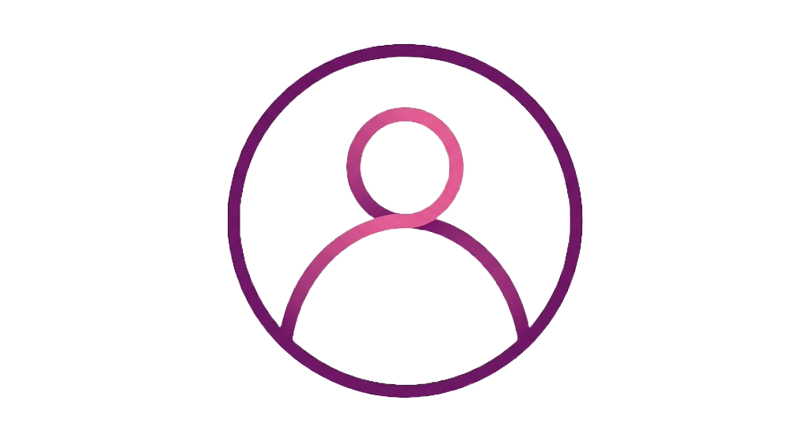

I am a Computer Science student passionate about software development and web technologies.
I have knowledge of Java, Python, C, HTML, and CSS, and I am currently focusing on frontend development.
I enjoy building responsive and user-friendly websites while continuously improving my programming skills and exploring new technologies.

Hello! I'm
**Parth Bindal**
a passionate Computer Science student with a keen interest in software development, web technologies, and problem-solving. I enjoy transforming ideas into clean, functional, and visually appealing applications while continuously improving my technical and creative skills.
My technical foundation includes **Java, Python, C, HTML, and CSS**, and I am actively exploring modern frontend development to build responsive and user-friendly websites. Alongside web development, I regularly practice coding challenges to strengthen my understanding of data structures, algorithms, and programming logic.
I believe that learning never stops. Every project I create is an opportunity to improve my coding standards, discover new technologies, and gain practical experience. I focus on writing clean, maintainable code and creating applications that are both efficient and easy to use.
As an aspiring **Full-Stack Developer and Software Engineer**, my goal is to build innovative digital solutions that solve real-world problems. I am always eager to learn, collaborate with others, and take on new challenges that help me grow both personally and professionally.